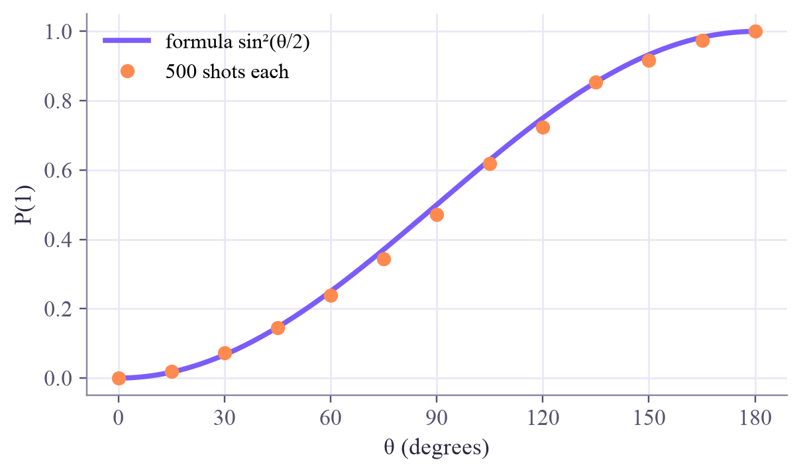

theta = 66.42 degrees
4000 flips: {'1': 1169, '0': 2831} -> P(1) = 0.292
┌────────────┐ ░ ┌─┐
q: ┤ Ry(1.1593) ├─░─┤M├
└────────────┘ ░ └╥┘
meas: 1/══════════════════╩═
0
Quantum Computing
 about 11 min
about 11 min qc-w1d5.ipynb
qc-w1d5.ipynb
Project: quantum coins
Turn one qubit into a coin with any bias you like. Then play detective: recover a hidden angle from nothing but counts.
In this lesson you will
- Use to make a coin with
- Invert the formula to design a coin with a chosen bias
- Estimate an unknown angle from measurement counts, with an honest error range
Warm-up
1 minA coin with a dial

An H gate gives a fair coin. But what if you want a coin that lands on 1 exactly 30% of the time? Quantum computers have a gate with a dial for that. This week's project puts everything together: amplitudes, the Born rule, shots and error bars.
Big idea
3 minThe RY gate is a dial
The gate turns the amplitude arrow of by an angle toward (on the circle from Monday's lesson):
leaves alone, gives a fair coin and gives . (Why the half angle? Next week the Bloch sphere makes it obvious.)
Two directions of the same formula:
Design: bias → angle
Want ? Invert: . For that's .
Detect: counts → angle
Measure shots, estimate with its error, then turn and its ± 2-error range into angles with the same inverse.
This is how experiments learn about quantum states: never directly, always through statistics of measurements.
Play
3 minDesign, then detect
Now the other direction. A coin with a hidden angle : measure it, read the orange band where the curve allows your estimate, and make your guess.
Try this
Guess after only 10 shots, then after 1000. How wide is the allowed range each time? Notice that coins near are easiest to pin down: the curve is steepest there, so a small change in angle moves the most.
Code
2 minCoins in Qiskit
The notebook for this lessonEvery code cell below, with what it printed, is in
qc-w1d5.ipynb. To change the code and run it yourself, open the notebook in Google Colab (free, in your browser) or download it for your own Jupyter.import numpy as np
from qiskit import QuantumCircuit
from qiskit.primitives import StatevectorSampler
sampler = StatevectorSampler(seed=5)
def coin(theta):
"""A one-qubit circuit that lands on 1 with probability sin^2(theta / 2)."""
qc = QuantumCircuit(1)
qc.ry(theta, 0)
qc.measure_all()
return qc
def theta_for(p):
"""The angle that gives P(1) = p: invert p = sin^2(theta / 2)."""
return 2 * np.arcsin(np.sqrt(p))
theta = theta_for(0.3)
counts = sampler.run([coin(theta)], shots=4000).result()[0].data.meas.get_counts()
print(f"theta = {np.degrees(theta):.2f} degrees")
print(f"4000 flips: {counts} -> P(1) = {counts.get('1', 0) / 4000:.3f}")
print(coin(theta).draw("text"))What it printed in the notebook
import matplotlib.pyplot as plt
angles = np.radians(np.arange(0, 181, 15))
circuits = [coin(a) for a in angles]
results = sampler.run(circuits, shots=500).result()
measured = [r.data.meas.get_counts().get("1", 0) / 500 for r in results]
grid = np.linspace(0, np.pi, 200)
plt.figure(figsize=(6.2, 3.4))
plt.plot(np.degrees(grid), np.sin(grid / 2) ** 2, color="#7b5cfa", lw=2.5, label="formula sin²(θ/2)")
plt.plot(np.degrees(angles), measured, "o", color="#ff8a50", label="500 shots each")
plt.xlabel("θ (degrees)")
plt.ylabel("P(1)")
plt.xticks(range(0, 181, 30))
plt.legend()
plt.show()What it printed in the notebook

_hidden = np.random.default_rng(2026).uniform(np.radians(20), np.radians(160))
def mystery_coin(shots):
return sampler.run([coin(_hidden)], shots=shots).result()[0].data.meas.get_counts()
print(mystery_coin(20))What it printed in the notebook
{'0': 17, '1': 3}Project
4 minProject: be the detective
Write estimate_theta(counts). It returns the estimated angle and a 95% range for it:
- estimate = (number of 1s) / shots, and its error ;
- take error and error (keep them between 0 and 1);
- turn all three into angles with
theta_for.
Run it on 2000 shots of the mystery coin. How narrow can you make the range?
def estimate_theta(counts):
shots = sum(counts.values())
p = counts.get("1", 0) / shots
# TODO: the error of p, then the angles for p - 2*error, p and p + 2*error
return None, (None, None)
estimate, (low, high) = estimate_theta(mystery_coin(2000))
print("estimate:", estimate, " range:", low, high)Need a hint?
np.clip(x, 0, 1) keeps a number between 0 and 1. np.degrees turns radians into degrees.
Show a solution
def estimate_theta(counts):
shots = sum(counts.values())
p = counts.get("1", 0) / shots
err = np.sqrt(p * (1 - p) / shots)
low, high = np.clip(p - 2 * err, 0, 1), np.clip(p + 2 * err, 0, 1)
return np.degrees(theta_for(p)), (np.degrees(theta_for(low)), np.degrees(theta_for(high)))
for shots in [100, 2000, 50000]:
est, (low, high) = estimate_theta(mystery_coin(shots))
print(f"{shots:6d} shots: theta = {est:6.2f} degrees, 95% range {low:6.2f} to {high:6.2f}")
print(f"\nThe hidden angle was {np.degrees(_hidden):.2f} degrees.")What it printed in the notebook
100 shots: theta = 47.16 degrees, 95% range 34.24 to 57.77 2000 shots: theta = 44.27 degrees, 95% range 41.65 to 46.78 50000 shots: theta = 44.97 degrees, 95% range 44.45 to 45.48 The hidden angle was 45.05 degrees.
Check yourself
2 minQuick check
Question 1 of 3
Which angle makes a fair 50/50 coin with ?
Question 2 of 3
You want . Which angle do you need?
Question 3 of 3
Why do angles near 90° need fewer shots to pin down than angles near 0°?
Wrap-up
1 minThis week in one sentence
Machine-learning link
You just fitted a parameter to data: the angle that best explains the counts. That's machine learning in miniature. A quantum classifier does the same with many angles at once, and the "data" are labeled examples instead of one coin.
Go deeper (optional)
What you did is the simplest case of quantum state estimation. Week 3's project, state tomography, extends it to recover the whole state, phase included.
That's week 1 of Quantum Computing! Saturday has an optional flashback. Monday: the Bloch sphere, a globe for every qubit state.

That's the lesson!
Tap the button to save it. Short and steady wins.
Marked by mistake? Undo